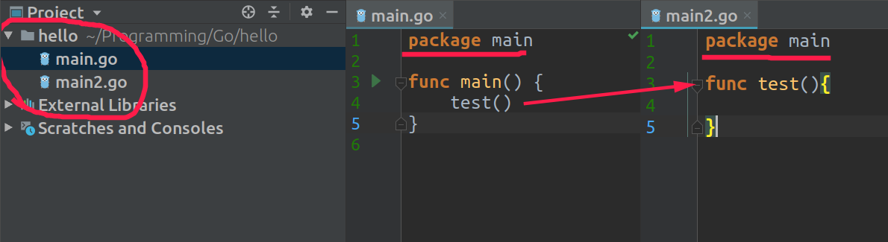

Базовая часть
Go, также известный как Golang, — это язык программирования с открытым исходным кодом.
Представленный публике в 2009 году, Go был разработан для упрощения задач программирования и повышения эффективности. Он родился из потребности в языке, который был бы прост для понимания, эффективен для выполнения и прежде всего способен справиться с масштабами, в которых работает Google. Его отличают простота, эффективность, многопоточное программирование, кроссплатформенность и высокая скорость компиляции
Функции
Функция объявляется следующим образом:
func имя_функции (список_параметров) (типы_возвращаемых_значений) { выполняемые_операторы
}
При вызове функции передается копия значения переменной.
Функции могут возвращать результат. Для этого нужно после списка параметров функции указать тип возвращаемого результата. А в теле функции использовать оператор return, после которого указывается возвращаемое значение:
package main
import "fmt"
func main() {
var a = add(4, 5) // 9
var b = add(20, 6) // 26
fmt.Println(a)
fmt.Println(b)
}
func add(x, y int) int {
return x + y
}
Функции с переменным числом аргументов могут быть вызваны с любым количество аргументов. Пример такой функции - это fmt.Println.
Если у вас есть несколько аргументов в срезе, вы можете применить его к функции с переменным числом аргументов таким образом func(slice...).
package main
import "fmt"
func sum(nums ...int) {
fmt.Print(nums, " ")
total := 0
for _, num := range nums {
total += num
}
fmt.Println(total)
}
func main() {
sum(1, 2)
sum(1, 2, 3)
nums := []int{1, 2, 3, 4}
sum(nums...)
}
[1 2 3] 6
[1 2 3 4] 10
Массивы и срезы
Массив — это последовательность элементов одного типа фиксированной длины. Объявление массива осуществляется следующим образом:
var a [3]int fmt.Println(a) // [0 0 0]
(массивы разной длины относятся к разным типам независимо от того, что хранят значения одного типа)
Одновременно с объявлением массива мы можем задать значения его элементов (инициализировать его):
b := [3]int{1, 2, 3}
c := [...]int{1, 2, 3} // вместо явного указания длины массива мы можем указать символ многоточия (...) в квадратных скобках, тогда длина массива будет определена Go в зависимости от количества указанных при инициализации значений.
d := [3]int{1: 12}
fmt.Println(a) // [1 2 3]
fmt.Println(b) // [1 2 3]
fmt.Println(c) // [1 2 3]
fmt.Println(d) // [0 12 0]
Для обращения к элементам массива применяются индексы - номера элементов.
Срезы (слайсы, slices)
Срез — это последовательность элементов одного типа переменной длины.
Массивы и срезы тесно связаны. Срез — это структура данных, которая предоставляет доступ к подпоследовательности элементов базового массива.
Длину массива изменять нельзя, а вот новые элементы в срез добавлять можно, так что в некоторых языках срезами называются динамические массивы.
создание среза:
var b []int = []int{1, 2, 3}
c := []int{1, 2, 3}
d := []int{1: 12}
fmt.Println(a) // []
fmt.Println(b)// [1 2 3]
fmt.Println(c)// [1 2 3]
fmt.Println(d) // [0 12]
На этом способы создания среза в Go не заканчиваются. Для гибкого способа создания пустых срезов в Go существует встроенная функция make следующего вида:
make([]T, length, capacity)
fmt.Println(a)
Функция append позволяет добавить в срез новый элемент, выглядит она следующим образом:
a =
append(a, 4, 5) fmt.Println(a) // [1 2 3 4 5]
Рассматривая эти темы помните о том, что срез по своей сути - указатель на массив, а это влияет на его поведение при передаче в качестве аргумента в функцию:
func fnA(a [3]int) {
a[1] = 15
}
func fnB(a []int) {
a[1] = 15
}
func main() {
a := [3]int{1, 2, 3}
b := []int{1, 2, 3}
fnA(a)
fnB(b)
fmt.Println(a) // [1 2 3]
fmt.Println(b) // [1 15 3]
}
В приведенном примере мы создали 2 функции: fnA и fnB. Первая получает в качестве аргумента массив из 3-х элементов, вторая - срез. Обе функции изменяют второй элемент последовательности, но мы получаем совсем разный результат, потому что fnB работала с указателем на массив и изменила непосредственно сам массив, fnA же работала с копией массива, поэтому внутри функции был изменен элемент копии массива, а базовый массив остался неизменен.
К элементам среза обращение происходит также, как и к элементам массива - по индексу и также мы можем перебирать все элементы с помощью цикла for:
var users []string = []string{"Tom", "Alice", "Kate"}
for _, value := range users{
fmt.Println(value)
}
Область видимости
Объявляя переменную, мы связываем ее имя с отражающей ее сущностью (числом, строкой, структурой). Область видимости является частью исходного кода, в которой использование объявленного имени ссылается на сущность из этого объявления.
Имя, объявленное внутри синтаксического блока, невидимо вне блока, приведем пример:
package main
import "fmt"
func scope() {
v := 1
fmt.Print(v)
}
func main() {
/*
* Если мы не станем рассматривать в данном случае вопрос о времени жизни переменной,
* а сконцентрируемся только на области видимости, то можем констатировать, что из
* функции main мы не можем получить доступа к переменной v, объявленной в функции
* scope.
*/
scope()
fmt.Print(v) // ошибка компиляции
}
Цикл for создает два лексических блока: явный блок для тела цикла и неявный блок, который дополнительно охватывает переменные, объявленные в инициализации цикла.
package main
import "fmt"
var x = 1 // x доступна в любом месте в этом пакете
func main() {
var y = 2 // y доступна только внутри функции main
if true {
var z = 3 // z доступна только внутри этого блока if
fmt.Println(x, y, z) // Выводит: 1 2 3
}
fmt.Println(x, y) // Выводит: 1 2
fmt.Println(z) // Ошибка: z не определена }
Аналогично конструкции цикла for такие неявные области видимости создаются конструкциями if, switch и select.
Пакеты
В Go нет стандартного ООП как в C++/Java/C# и других языках. Поэтому и классов здесь нет, но есть пакеты. Большие программы принято разделять на пакеты, чтобы упростить её чтение.
Создадим в проекте два файла: один - main.go, другой - main2.go. Но оба файла лежат в одном пакете, потому что мы прописали package main. Поэтому мы без импорта можем вызывать функции из другого файла.
Для запуска программы выше необходимо указать все файлы пакета main через пробел:
Указатели
Указатель - значение, которое указывает на адрес другой переменной. Рассмотрим это на примере:
func main() {
a := 200
b := &a
*b++
fmt.Println(a)
}
В этом примере мы инициализируем переменную а и ссылающуюся на неё переменную b, мы не знаем, где она лежит, однако компилятор об этом позаботится. Оператор & (взятие адреса) говорит о том, что в переменную b записывается не значение переменной a, а её адрес в памяти. Переменная b здесь является указателем.
Иначе можно записать так
var b *int = &a
*int - значит переменная указывает на другую переменную типа int
Если вы всё ещё неуверенно себя чувствуете себя с указателями в Go, запомните два простых правила:
- "Амперсанд" & звучит похоже на "Адрес" (ну, и то слово и другое на "А" начинается, по крайней мере)))), поэтому &x читается как "адрес переменной X"
- звёздочка * ни на что не похоже на звучит, но может использоваться в двух случаях — перед типом (var x *MyType — означает "тип указателя на MyType") и перед переменной (*x = y — означает "значение по адресу")
Зачем в Go амперсанд и звёздочка (& и *)?
Структуры
Структура — это тип, содержащий именованные поля. Например, мы можем представить круг таким образом:
type Circle struct {
x float64
y float64
r float64
}
Структуры и их методы пишутся выше main, главное вызвать все это в main
Мы можем создать экземпляр нового типа Circle несколькими способами:
// или
c := Circle{}
c := new(Circle) // Это выделит память для всех полей, присвоит каждому из них нулевое значение и вернет указатель (*Circle)
c := Circle{x: 0, y: 0, r: 5} // с присвоением значений
c := Circle{0, 0, 5}
Получить доступ к полям можно с помощью оператора . (точка)
Очень важно помнить о том, что аргументы в Go всегда копируются. Если мы попытаемся изменить любое поле в функции , оригинальная переменная не изменится. Поэтому используйте указатели
Методы
Несмотря на то, что программа стала лучше, мы все еще можем значительно её улучшить, используя метод — функцию особого типа:
func (c *Circle) area() float64 {
return math.Pi * c.r * c.r
}
Между ключевым словом func и именем функции мы добавили «получателя». Получатель похож на параметр — у него есть имя и тип, но объявление функции таким способом позволяет нам вызывать функцию с помощью оператора .:
Нам не нужно использовать оператор & (Go автоматически предоставляет доступ к указателю на Circle для этого метода), и поскольку эта функция может быть использована только для Circle мы можем назвать её просто area.
Строки, руны
String
Строка представляет собой неизменяемую последовательность байтов. Из этого следует ряд выводов:
- к строке применимы операции, применимые к массивам и срезам;
- чтобы изменить строку, необходимо создать новую строку;
- мы можем итерироваться по строке как и по всякой последовательности, но итерируясь по строке, мы будем итерироваться по байтам, составляющим строку, а не по символам;
- мы можем определить в строке подстроку.
Срезы рун ([]rune)
Когда мы говорили о типах string и []byte, то выяснили, что 1 символ может занимать более одного байта. Слегка упрощая мы можем сказать, что тип []rune - это последовательность на самом деле кодов символов, причем 1 символ состоит из 1 кода (тип rune соответствует типу int32).
Методы работы с типом []rune показаны в следующем примере (обратите внимание на тип используемых в примере кавычек, это не те же самые кавычки, что мы используем при работе со строками):
func ExampleRune() {
rs := []rune("Это срез рун")
// Итерируясь мы будем заменять символ 'р' на '*'
for i := range rs {
if rs[i] == 'р' {
rs[i] = '*'
}
}
fmt.Printf("Измененнный срез в виде строки: %s\n", string(rs))
// Output:
// Измененнный срез в виде строки: Это с*ез *ун
}
rs := []rune(someString), потом работаешь со строкой как надобно, и обратно
переводишь string(rs)
Строка в Go это срез байтов, поэтому мы можем конвертировать байты в строку и наоборот, тоже самое работает и со срезами типа rune.
Обработка ошибок
Самая простая обработка - это проверка ошибки на пустоту. Многие методы и функции в GO при вызове возвращают не только нужный результат, но и ошибку. К примеру: у нас есть функция которая делит число на другое число и ввод переменной.
Однако, надо учесть, что пользователь может быть невнимательным и подать на вход все, кроме int, что может сломать нашу программу. Предотвратим это, используя специальную конструкцию:
package main
import "fmt"
func divide(a int, b int) int {
return a / b
}
func main() {
var input int
_, err := fmt.Scan(&input) // функция Scan возвращает два параметра, но нам сейчас важно проверить только ошибку
// fmt.Scan, как и fmt.Print возвращают 2 значения: количество прочитанных / записанных байт и статус ошибки.
if err != nil {
fmt.Println("Проверьте типы входных параметров")
} else {
fmt.Println(divide(input, 5)) //Выведем результат, если ошибок нет
}
}
Теперь если наш пользователь введет переменную типа не int то он увидит нашу дружелюбную просьбу:
Проверьте типы входных параметров
nil - это пустота (null в других языках)
Оператор panic
Оператор panic позволяет сгенерировать ошибку и выйти из программы:
package main
import "fmt"
func main() {
fmt.Println(divide(15, 5))
fmt.Println(divide(4, 0))
fmt.Println("Program has been finished")
}
func divide(x, y float64) float64{
if y == 0{
panic("division by zero!")
}
return x / y
}
В функции main в вызове fmt.Println(divide(4, 0)) будет выполняться оператор panic, поскольку второй параметр функции divide равен 0. И в этом случае все последующие операции, которые идут после этого вызова, например, в данном случае это вызов fmt.Println("Program has been finished"), не будут выполняться. В этом случае мы получим следующий консольный вывод:
panic: division by zero!
Отображения, по другому - map, карта
Все ключи в данном отображении имеют один и тот же тип, как и все значения имеют один и тот же тип, но тип ключей не обязан совпадать с типом значений. Тип ключа К должен быть сравниваемым с помощью оператора ==, чтобы отображение могло проверить, равен ли данный ключ одному из имеющихся в нем.
// с помощью встроенной функции make:
m1 := make(map[int]int)
// с помощью использования литерала отображения:
m2 := map[int]int{
// Пары ключ:значение указываются при необходимости
12: 2,
1: 5,
}
fmt.Println(m1) // map[]
fmt.Println(m2) // map[1:5 12:2]
Обратиться к элементам отображения можно с помощью обычной индексац
m := map[int]int{
12: 2,
1: 5,
}
fmt.Println(m[12]) // 2
Удаление осуществляется с помощью встроенной функции delete:
m := map[int]int{
12: 2,
1: 5,
}
delete(m, 12) // Удаление элемента по ключу 12
fmt.Println(m) // map[1:5]
Для перечисления всех пар "ключ-значение" в отображении мы используем циклы по диапазону, аналогичные тем, которые мы использовали для массивов и срезов. Последовательные итерации приведенного ниже цикла присваивают переменным key и value значения из очередной пары "ключ-значение" :
for key, value := range mapName {
fmt.Println(key, value)
}
Кроме того, Go позволяет применить к отображению функцию len, которая вернет количество пар "ключ-значение", хранящееся в отображении:
m := map[int]int{
1: 10,
2: 20,
3: 30,
}
fmt.Println(len(m)) // 3
Как же понять, что ключ в отображении присутствует? Мы можем воспользоваться тестом из следующего примера:
m := map[int]int{
1: 10,
}
if value, ok := m[1]; ok { // значение ok - булевое значение, показывающее, есть ли значение по такому ключу (т.е. ok == True)
fmt.Println(value) // 10
}
if value, ok := m[2]; ok {
fmt.Println(value) // Условие не выполняется
}
Преобразование типов данных
При конвертации чисел в строки очень удобно использовать пакет strconv, он обладает методом Itoa, превращающим числовое значение (int) переменной в строковое (string).
package main
import (
"fmt"
"strconv"
)
func main() {
a := strconv.Itoa(2020) // int -> string
fmt.Printf("%T \n", a) // тип - string
fmt.Println(a) // 2020
}
Конвертация целых беззнаковых чисел в строку
var a uint64 = 10101
res := strconv.FormatUint(a, 10)
fmt.Println(res) // 10101
Конвертация bool в string
var a = true
res := strconv.FormatBool(a)
fmt.Println(res) // true
fmt.Printf("%T", res) // string
Строка в Go это срез байтов, поэтому мы можем конвертировать байты в строку и наоборот:
package main
import (
"fmt"
)
func main() {
a := "str"
b := []byte(a)
c := string(b)
fmt.Println(a) // str
fmt.Println(b) // [115 116 114] - побайтовый срез
fmt.Println(c) // str
}
Первая строка вывода - значение переменной "a", вторая - ее побайтовый срез, третья - значение переменной "c", являющейся результатом конвертации байтов в строку.
Тоже самое работает и со срезами типа rune:
package main
import (
"fmt"
)
func main() {
a := "строка"
b := []rune(a)// срез рун
c := string(b)
fmt.Println(a) // строка
fmt.Println(b) // [1089 1090 1088 1086 1082 1072] - срез рун
fmt.Println(c) // строка
}
Анонимные функции
Анонимные функции позволяют нам определить некоторое действие непосредственно там, где оно применяется. Например, нам надо выполнить сложение двух чисел, но больше нигде это действие в программе не нужно:
package main
import "fmt"
func main() {
f := func(x, y int) int{ return x + y}
fmt.Println(f(3, 4)) // 7
fmt.Println(f(6, 7)) // 13
}
Фактически переменная f определена как:
То есть переменной f можно присвоить любую функцию, которая соответствует типу func(int, int) int.
Анонимная функция как аргумент функции
Очень удобно использовать анонимные функции в качестве аргументов других функций:
package main
import "fmt"
func action(n1 int, n2 int, operation func(int, int) int){
result := operation(n1, n2)
fmt.Println(result)
}
func main() {
action(10, 25, func (x int, y int) int { return x + y }) // 35
action(5, 6, func (x int, y int) int { return x * y }) // 30
}
Анонимная функция как результат функции
package main
import "fmt"
func selectFn(n int) (func(int, int) int){
if n==1 {
return func(x int, y int) int{ return x + y}
}else if n==2{
return func(x int, y int) int{ return x - y}
}else{
return func(x int, y int) int{ return x * y}
}
}
func main() {
f := selectFn(1)
fmt.Println(f(2, 3)) // 5
fmt.Println(f(4, 5)) // 9
fmt.Println(f(7, 6)) // 13
}
Доступ к окружению.
Преимуществом анонимных функций является то, что они имеют доступ к окружению, в
котором они определяются.
Ссылки на Курсы
#.